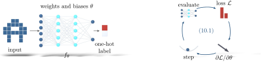

Advanced Quantum Materials 2027 · All lectures · Lecture notes
Session 10. Machine Learning Quantum Materials
10.1 Machine learning and many-body physics in two directions
Let us first give the plan of this session, since the session goes in two directions and it is useful to know which direction we are following at each point. In one direction, we use machine-learning architectures, mostly neural networks, to solve many-body problems. Examples are to represent wavefunctions that are too large to store, to reconstruct states from a small number of measurements, to classify phases of matter and to learn Hamiltonians from experimental observables. In the other direction, we use many-body architectures, in particular tensor networks, as machine-learning tools, and we apply them to ordinary tasks such as image classification. Under both directions there is a third theme, which is probably the most important one in practice. This is to combine machine learning with the condensed-matter methods that we already have, such as density functional theory, phase classification and the extraction of Hamiltonians, to solve problems that are hard for each of the two approaches alone. We will follow the same order as the lecture. We start with neural networks and how they learn, then neural network quantum states and tomography, then tensor networks used as machine learning, then machine learning inside density functional theory, then phase classification, and at the end Hamiltonian learning.
10.2 Neural networks as function approximators
Machine learning is a large field, and we should say clearly which part of it we use in this session. There are three broad types of task. Supervised learning maps labeled inputs to outputs, and the standard example is image classification. This is the type that we will use in the rest of the session. Generative learning models a probability distribution directly, so that one can sample new instances from it. For instance, a generative adversarial network that is trained on photographs of cats can produce realistic images of cats that never existed. Reinforcement learning trains an agent to choose the actions that maximize a cumulative reward, given the state of its environment. In this session we will not develop generative or reinforcement learning further, even though both of them have real uses in other parts of quantum materials. We keep the GAN example with cat faces in mind only to remember that supervised learning is not the whole field, even if it is all that we use in this session.
We can think of a deep neural network as a very flexible function with parameters. It takes an input, which is an array of numbers, passes it through a sequence of layers, and gives an output, which is another array of numbers. Inside a layer, the value of each node is a nonlinear function of the values of all the nodes in the previous layer, combined with a set of free parameters. These parameters are the weights, one for each connection, and the biases, one for each node. The architecture, which is the number and the width of the layers, fixes how complex a function the network can represent. The specific values of the weights and biases, which we call together \(\theta\), fix which function it does represent at a given moment. To train a network means to search over \(\theta\) for the values that make the network give the function that we want. In practice, we define a loss function \(\mathcal{L}(\theta)\) that measures how far the output of the network is from the desired one, and we minimize it. This is usually done with backpropagation, which is an efficient and exact way to compute \(\partial \mathcal{L}/\partial\theta\) with the chain rule, together with gradient descent,
\[\mathcal{L}(\theta) = \sum_n \left\| f_\theta(x_n) - y_n \right\|^2, \qquad \theta \;\longrightarrow\; \theta - \eta\, \nabla_\theta \mathcal{L}(\theta), \tag{10.1}\]
where \(\{(x_n, y_n)\}\) is a set of labeled training examples and \(\eta\) is the learning rate. Every use of a neural network in this session is a variation of (10.1), even when the physics attached to it is exotic. We have to choose the right input, the right output and the right loss, and then the training procedure is always the same gradient descent.
We double the number of layers of a network, and then we train it with (10.1). Which statement is correct?
Show the answer
The correct option is B.
The architecture fixes which functions are possible, and the weights and biases \(\theta\) fix which one the network is at a given moment. Gradient descent only moves \(\theta\).
In the update \(\theta\to\theta-\eta\nabla_\theta\mathcal{L}\) the learning rate \(\eta\) is made much too large. What do we expect?
Show the answer
The correct option is B.
The gradient only gives the direction in which the loss decreases locally. A step that is too long jumps over the valley to a point where the loss is higher, so the update must be small.
The concrete example that we keep in mind is the classification of images of cats and dogs, since we will use the same architecture two more times in this session. An image is an \(N\times N\) matrix of pixel values. We flatten it into the input layer of the network, and the output layer has only two nodes, with the target \((1,0)\) for “cat” and \((0,1)\) for “dog.” We train on a labeled set of images by minimizing (10.1), with \(f_\theta\) the output of the network and \(y_n\) the one-hot label. Once the network is trained, it classifies new images that have no label. This template can be used in many cases, since nothing in it depends on the input being a photograph. It only needs the input to be an array of numbers with a categorical label. We will see the same structure, an input matrix and a one-hot output, again in Section 10.6, where a spin configuration takes the place of the photograph. Figure 10.1 shows the template once, and the four later constructions of this session use it without change except for the choice of input, output and loss.
